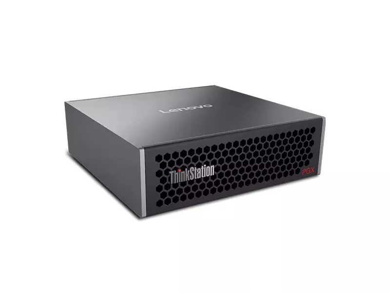
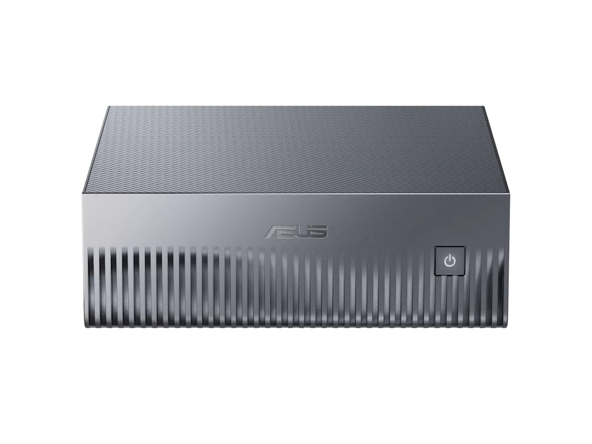

この資料は 2026-09-05 時点の情報です。価格・在庫・キャンペーンはその後変わっています。最新の比較は ローカルLLM 機種比較 2026 を参照してください。
目次
調査の経緯と情報源の扱い
調査の出発点は、日本HPが実施している HP ZGX Nano G1n AI Station のキャンペーンページでした。そこから「同じスペックの機種は他にどれがあり、いくらなのか」を調べています。
調査手段は3回変えている
この調査は取得手段を途中で切り替えました。結果の信頼性に関わるため記録しておきます。
| 段階 | 手段 | 結果 |
|---|---|---|
| 1回目 | WebFetch | HPキャンペーンページと比較記事は読めた。しかし各社の価格は個人ブログ1本に依拠する状態で、精度が不足していた |
| 2回目 | claude-in-chrome | Lenovo・Dell・Acer・価格.com の一次情報を取得。ブログ値の誤りを複数発見。ただし javascript_tool が一部サイトで [BLOCKED: Cookie/query string data] となり、画像URLの収集は完遂できなかった |
| 3回目 | PlayWright（共有環境） | ヘッドレスChromium で lazy load を発火させ、製品画像9件すべてを公式・正規流通ドメインから取得 |
価格の出典区分
本レポートでは価格の出典を3段階に分けて扱っています。読むときはこの区別を前提にしてください。
| 区分 | 意味 | 該当 |
|---|---|---|
| 公式直販 | メーカー自身が提示している価格 | HP・Dell・Lenovo・Acer |
| 正規流通 | 国内正規代理店・販売店の掲載価格 | アーク（ASUS・Lenovo） |
| 通販横断 | 価格.com等の最安値。出品者・保証条件は個別確認が必要 | NVIDIA純正・GIGABYTE・MSI |
PlayWright を使った画像収集では、出典を2回やり直しています。 1回目は MSI が YouTube のサムネイル、環境PCが第三者ブログから取れてしまったため、許可ホストを msi.com / hp.com に限定して取り直しました。最終的に採用したのはすべてメーカー公式CDNか正規販売店の画像です。
基準機: HP ZGX Nano G1n

この機種は NVIDIA DGX Spark のリファレンス設計をそのまま採用した OEM 機です。したがって比較対象は「似たスペックの他社機」ではなく、事実上「同じ設計の別ブランド機」になります。
| 項目 | 仕様 |
|---|---|
| SoC | NVIDIA GB10 Grace Blackwell Superchip |
| CPU | Arm 20コア（Cortex-X925 ×10 + Cortex-A725 ×10） |
| GPU | NVIDIA Blackwell（GB10 内蔵） |
| メモリ | 128 GB LPDDR5x 統合システムメモリ（256bit・帯域 273 GB/s）オンボード・増設不可 |
| ストレージ | 4 TB PCIe 4.0 x4 NVMe SED（OPAL 自己暗号化） |
| AI性能 | 1 PFLOPS（FP4）／最大 1,000 TOPS |
| 対応モデル規模 | 最大 2,000 億パラメータ |
| ネットワーク | NVIDIA ConnectX-7 NIC ×1、10 Gigabit LAN（RJ45）×1、Wi-Fi 7、Bluetooth 5.4 |
| 電源 | 付属 AC アダプター 240 W |
| 本体サイズ | 150（W）× 150（L）× 51（H）mm |
| OS | NVIDIA DGX OS 7（Ubuntu ベース） |
| 保証 | 1年センドバック |
| 定価 | 2,125,200 円（税込） |
| キャンペーン価格 | 998,800 円（税込）／500台限定・約53%オフ |
2台連結による拡張
ConnectX-7 を使って同型機2台を直結でき、扱えるモデル規模を拡張できます。これは GB10 系すべてに共通する機能で、機種選定の差にはなりません。
スペック表で確定した仕様
キャンペーンページだけでは読み取れなかった部分が、日本HP のスペック表ページ（jp.ext.hp.com/prod/workstations/zgx_nano_ai_station/bto/）で確定しました。
| 項目 | スペック表の記載 | キャンペーンページ |
|---|---|---|
| ConnectX-7 | 200GbE イーサネットコントローラー（ZGX Nano 相互接続用） | 帯域の記載なし |
| 電源アダプター | 240W TypeC（89% 変換効率） | 240W のみ |
| ストレージ | 4TB PCIe NVMe OPAL M.2 SSD | 4TB PCIe-4x4 2242 NVMe SED OPAL |
| メモリ | 128GB LPDDR5x（ユニファイド・オンボード）・帯域 273GB/s | 128GB LPDDR5x（オンボード） |
| 付属品 | キーボードなし マウスなし 「マウス、キーボードは同梱しません」と明記 | 記載なし |
| OS | NVIDIA DGX OS | 一致 |
| 保証 | 1年間センドバック保証 | 一致 |
ConnectX-7 は 200GbE です。 2台連結時の帯域がこれで決まります。また電源が USB TypeC 給電（240W・89%効率）であることも、キャンペーンページではなくスペック表側にしか書かれていません。キーボード・マウスは付属しないため、別途用意が必要です。
4TB同一構成での全機種比較
ストレージ容量を 4 TB に揃えた8機種です。CPU・メモリ・帯域・AI性能・本体サイズはすべて同一なので、実質的に価格と保証だけの比較になります。安い順に並べています。
HP は キャンペーン価格の税込 998,800 円を採用しました。差額列はこの金額を基準にしています。
| 製品 | 外観 | 価格（税込） | HPとの差額 | 保証・流通形態 | 出典 |
|---|---|---|---|---|---|
| HP ZGX Nano G1n |
|
998,800 円 キャンペーン価格 定価 2,125,200 円 |
基準 | 1年センドバック | 公式直販 |
| NVIDIA DGX Spark 純正基準機 |
 |
1,078,000 円〜 | +79,200 円 | 販売店依存 | 通販横断 |
| Lenovo ThinkStation PGX 4TB / 1年保証 |
 |
1,092,300 円 | +93,500 円 | 1年（正規代理店保証） | 正規流通 |
| MSI EdgeXpert MS-C931 |
 |
1,110,659 円 | +111,859 円 | 要注意 Amazon 第三者出品者経由。国内代理店保証の有無は不明 | 通販横断 |
| GIGABYTE AI TOP ATOM ATAGB10-9001 |
 |
1,230,000 円〜 | +231,200 円 | 販売店依存 | 通販横断 |
| Dell Pro Max with GB10 |
 |
1,278,847 円 | +280,047 円 | オンサイト保守を選択可 | 公式直販 |
| Lenovo ThinkStation PGX 4TB / 3年・型番 30KLS0GB00 |
1,399,970 円 | +401,170 円 | 3年プレミアサポート | 公式直販 | |
| Acer Veriton GN100 |
 |
1,799,820 円 通常 1,999,800 円 |
+801,020 円 | Acer公式直販・在庫あり・送料無料 | 公式直販 |
すべて Web 掲載価格での比較です。 差額列は「現時点の提示価格の差」であり、交渉後の最終差額ではありません。法人向けの構成では個別見積で下がる余地があるため、実際の調達額はこの表より低くなり得ます。
全機種で共通している仕様
一次情報で突き合わせた結果、以下はすべての機種で一致していました。性能で選ぶ意味はありません。
| 項目 | 全機種共通の値 |
|---|---|
| SoC | NVIDIA GB10 Grace Blackwell Superchip |
| CPU構成 | Arm 20コア（Cortex-X925 ×10 + Cortex-A725 ×10） |
| メモリ | 128 GB LPDDR5x 統合メモリ・256bit・273 GB/s |
| AI性能 | 1 PFLOPS（FP4）／1,000 TOPS |
| ネットワーク | ConnectX-7 NIC、10GbE RJ45、Wi-Fi 7、Bluetooth 5.4 |
| 電源 | 240 W AC アダプター |
| 本体サイズ | 150 × 150 × 約 51 mm（Lenovo のみ高さ 50.5 mm 表記） |
| OS | NVIDIA DGX OS（Ubuntu ベース） |
価格差 80万円は保証と流通経路の差です。 最安の HP（998,800円）と最高値の Acer（1,799,820円）の間で、動作性能は変わりません。差額が何に対する対価なのかを見て選ぶことになります。
容量が異なる構成の扱い
以下は 4 TB ではないため、前章の表とは直接比較できません。安く見えても容量が違います。
| 製品 | 外観 | 容量 | 価格（税込） | 状態・備考 |
|---|---|---|---|---|
| ASUS Ascent GX10 GX10-GG0006BN |
 |
1 TB | 899,800 円 通常 1,186,900 円 |
在庫なし アーク掲載・セール価格。次回入荷未定 |
| ASUS Ascent GX10 |
1 TB | 826,013 円 | 価格.com 通販最安。要注意 並行輸入・海外業者を含む可能性あり | |
| Lenovo ThinkStation PGX 30KLS0G900 |
2 TB | 1,199,990 円 | Lenovo公式直販・3年プレミアサポート・送料無料 |
ASUS の 826,013 円は表面上の最安値ですが、選定候補にはなりにくいです。 1 TB 構成なので HP の 4 TB とは比較になりません。加えてアークの正規流通分は在庫切れで、価格.com の最安値は出品者が特定できません。
二次情報との乖離と訂正
調査初期に参照した個人ブログの価格表を、一次情報で1件ずつ検証しました。8件中3件が誤りでした。
| 製品 | 二次情報（ブログ） | 一次情報で確認した実際の値 | 判定 |
|---|---|---|---|
| ASUS Ascent GX10 | 1,248,000 円 | 899,800 円（1TB・在庫なし）／826,013 円（通販最安） | 誤り |
| Lenovo ThinkStation PGX | 1TB で 1,199,900 円 | 2TB / 3年プレミアサポートで 1,199,990 円。1TB構成ではなかった | 誤り |
| MSI EdgeXpert | 4TB で 998,000 円 | 1,110,659 円。998,000 円の裏付けは取れなかった | 誤り |
| Acer Veriton GN100 | 1,799,820 円 | 一致。Acer公式直販の特別価格（通常 1,999,800 円） | 正しい |
| GIGABYTE AI TOP ATOM | 4TB で 1,230,000 円 | 一致。型番 ATAGB10-9001 | 正しい |
| Dell Pro Max with GB10 | 1,278,847 円 | 一致。Dell公式で確認 | 正しい |
| NVIDIA DGX Spark | 1,078,000 円 | 一致 | 正しい |
| HP ZGX Nano G1n | 998,800 円 | 一致。日本HP のキャンペーンページで確認（定価 2,125,200 円からの台数限定価格） | 正しい |
この検証で結論が変わった点
初期の結論では「4 TB で100万円を切るのは HP と MSI の2機種」としていました。MSI の実売が 1,110,659 円だったため、100万円を切るのは HP のみに訂正されます。HP は単独最安になり、2位との差も約8万円に広がりました。
二次情報に頼るとどこを外すか
誤っていた3件は、いずれも構成が違うのに同じ製品名で並べていたことに起因します。ASUS と Lenovo は容量が異なり、MSI は裏付けの取れない価格でした。製品名だけを見て価格を比べると、容量差がそのまま価格差に見えてしまいます。
比較の前提は「同一構成に揃うこと」です。 本レポートで 4TB 構成に限定したのはこのためで、容量の異なる機種は別章に分けています。価格だけを並べた表は、構成の列が無い時点で比較として成立しません。
Apple Mac との比較
GB10 搭載機と同じ「大容量ユニファイドメモリでローカルAIを動かす」用途で、Apple Mac も候補になります。2026-08-25 時点で Apple 公式ストア（日本）で実際に構成を選択して取得した価格です。カタログ値ではなく、その構成でカートに進める金額を記載しています。
メモリ容量はCPU/GPU構成に固定されている
調査して分かった最も重要な仕様上の制約です。Mac はメモリを自由に選べるわけではなく、チップのコア構成ごとに容量が1対1で決まります。
| 機種 | チップ / コア構成 | 選べるメモリ | メモリ帯域 |
|---|---|---|---|
| Mac Studio | M4 Max 14コアCPU / 32コアGPU | 36GB のみ | 410 GB/s |
| Mac Studio | M4 Max 16コアCPU / 40コアGPU | 64GB のみ | 546 GB/s |
| Mac Studio | M3 Ultra 28コアCPU / 60コアGPU | 96GB のみ | 819 GB/s |
| Mac Studio | M3 Ultra 32コアCPU / 80コアGPU | 96GB のみ | 819 GB/s |
| MacBook Pro 16" | M5 Max 18コアCPU / 40コアGPU | 48 / 64 / 128GB | 614 GB/s |
| Mac mini | M4 | 16 / 24GB | — |
| Mac mini | M4 Pro | 24 / 48GB | — |
据置型の Mac Studio は 96GB が上限で、128GB に届きません。 Apple で 128GB を積めるのは MacBook Pro の M5 Max だけです。なお Mac Studio は M4 Max / M3 Ultra 世代のままで、MacBook Pro だけが M5 世代に更新されており、同時点でも搭載チップの世代がずれています。
Mac Studio の構成別価格

| 構成 | メモリ | 帯域 | ストレージ | 価格（税込） |
|---|---|---|---|---|
| M4 Max 14C/32C | 36GB | 410 GB/s | 512GB | 419,800 円 |
| M4 Max 16C/40C | 64GB | 546 GB/s | 1TB | 653,800 円 |
| M4 Max 16C/40C | 64GB | 546 GB/s | 4TB | 923,800 円 |
| M4 Max 16C/40C | 64GB | 546 GB/s | 8TB | 1,283,800 円 |
| M3 Ultra 28C/60C | 96GB | 819 GB/s | 1TB | 899,800 円 |
| M3 Ultra 28C/60C | 96GB | 819 GB/s | 4TB | 1,169,800 円 |
| M3 Ultra 32C/80C | 96GB | 819 GB/s | 4TB | 1,439,800 円 |
MacBook Pro 16インチの構成別価格

スペースブラック・標準ディスプレイで構成した場合です。M5 Max ではストレージの下限が 2TB になります。
| 構成 | メモリ | 帯域 | ストレージ | 価格（税込） |
|---|---|---|---|---|
| M5 Max 18C/40C | 48GB | 614 GB/s | 2TB | 849,800 円 |
| M5 Max 18C/40C | 128GB | 614 GB/s | 2TB | 1,209,800 円 |
| M5 Max 18C/40C | 128GB | 614 GB/s | 4TB | 1,389,800 円 |
HP ZGX Nano G1n との直接比較
メモリ容量を揃えると、こうなります。HP はキャンペーン価格、Apple は公式ストアの構成価格です。
| 比較条件 | HP ZGX Nano G1n | Apple 側の該当機 | 価格差 | 帯域差 |
|---|---|---|---|---|
| 128GB / 4TB （同容量） |
998,800 円 273 GB/s |
MacBook Pro 16" M5 Max 1,389,800 円 / 614 GB/s |
Mac が +391,000 円 |
Mac が 2.25倍 |
| 4TB で最速 | 998,800 円 128GB / 273 GB/s |
Mac Studio M3 Ultra 96GB 1,169,800 円 / 819 GB/s |
Mac が +171,000 円 |
Mac が 3.0倍 |
| 4TB で下位価格帯 | 998,800 円 128GB / 273 GB/s |
Mac Studio M4 Max 64GB 923,800 円 / 546 GB/s |
Mac が −75,000 円 |
Mac が 2.0倍 |
容量を取るか、帯域を取るか
この比較は、単純な優劣ではなくトレードオフの構造になっています。
| 観点 | GB10 搭載機が有利 | Apple Mac が有利 |
|---|---|---|
| メモリ容量 | 128GB 同価格帯で最大容量。据置型で128GBを積めるのは GB10 側だけ | Mac Studio は 96GB 止まり。128GB はノート型の MacBook Pro のみ |
| メモリ帯域 | 273 GB/s。今回比較した Mac の全構成より遅い | 546〜819 GB/s 2.0〜3.0倍。トークン生成速度に直結する |
| エコシステム | CUDA NVIDIA DGX OS 7（Ubuntuベース）。既存のCUDA資産がそのまま動く | macOS + Metal / MLX。CUDA前提のコードは移植が必要 |
| 拡張 | 2台連結 ConnectX-7 200GbE で同型機を直結し、扱えるモデル規模を拡張できる | 同等の直結手段はない |
| 消費電力 | 240W TypeC アダプター（89%変換効率） | Mac Studio は最大 480W（連続使用時） |
| 設置サイズ | 150×150×51 mm | Mac Studio は 197×197×95 mm（体積で約4.6倍） |
| 汎用性 | DGX OS 専用機。日常用途には向かない | 汎用PC 開発・制作・日常利用を1台で兼ねられる |
| 可搬性 | 据置（ただし手のひらサイズで持ち運びは可能） | MacBook Pro は128GBをノートで持ち運べる |
LLM の推論速度はメモリ帯域に強く律速されます。 モデルが 96GB に収まるなら、帯域が3倍ある Mac Studio M3 Ultra のほうがトークン生成は速くなる可能性が高く、逆に 96GB を超えるモデルを扱うなら Mac Studio は選択肢から外れます。容量と帯域のどちらが先に効くかは、動かすモデルのサイズで決まります。
実測レポートによる裏付け
ここまでは帯域の数値から速度を推定してきましたが、M4 Max・128GB の MacBook Pro で 200B 級の MoE モデルを動かした実測が公開されています（J-Tech Japan・2026-08-28）。同じ 128GB クラスの実例なので、本レポートの推定と突き合わせられます。
| 項目 | 実測値 |
|---|---|
| 検証機 | MacBook Pro M4 Max / 128GB ユニファイドメモリ（帯域 546 GB/s） |
| モデル | Qwen3.8 Flash Next（MoE・総 200B / アクティブ約 10B） |
| 量子化とサイズ | UD-Q3_K_XL（3bit）・約 90 GB |
| 実行環境 | llama.cpp llama-server（-ngl 999 -c 65536）＋ OpenCode |
| 実効スループット | 9〜10 tok/s（セッション平均） |
| メモリ使用量 | 約 88 GiB（重み＋KVキャッシュ） |
| KVキャッシュ | 1トークン約 35 KiB（64k コンテキストで 2.3 GiB） |
| ツール呼び出し | 190 回・エラー 0 回 |
| 他との比較 | Dense 27B より 8 倍速い（1時間 vs 8時間）／ クラウドより 2.8 倍遅い（39分 vs 14分） |
GB10 搭載機での速度推定
デコード速度は帯域に律速されるため、同じモデル・同じ量子化なら帯域比でおおよその見当が付きます。
| 機種 | メモリ帯域 | 90GB モデルでの速度 |
|---|---|---|
| MacBook Pro M4 Max 128GB | 546 GB/s | 9〜10 tok/s（実測） |
| HP ZGX Nano G1n（GB10） | 273 GB/s | 約 4.5〜5 tok/s（推定） |
容量の分岐点は 96GB と 128GB の間にあります。 90GB のモデルに KV キャッシュ 2.3 GiB を足すと、96GB 機ではほとんど余裕が残りません。記事も BF16（354GB）は載らないため 3bit 量子化を選んだと述べています。なお GB10 の速度は帯域比からの推定で、実測ではありません。
選定の判断材料と結論
用途別の推奨
| 優先したいこと | 選ぶべき機種 | 価格（税込） | 理由 |
|---|---|---|---|
| 価格最優先 | HP ZGX Nano G1n | 998,800 円 キャンペーン価格 |
4TB同一構成で単独最安。2位の純正 DGX Spark に対し約8万円、Acer に対し80万円安い。ただし 500台限定・1年センドバック |
| 保守体制優先 | Dell Pro Max with GB10 | 1,278,847 円 | オンサイト保守を選択できる。HP との差額28万円が実質的な保守料 |
| 長期保証優先 | Lenovo ThinkStation PGX 4TB / 3年 |
1,399,970 円 | 3年プレミアサポート込み。HP との差額40万円で3年分の保守を前払いする形 |
| 純正構成にこだわる | NVIDIA DGX Spark | 1,078,000 円〜 | リファレンスそのもの。ソフトウェア情報が最も見つけやすい |
| 推論速度優先 （96GBに収まる範囲） |
Mac Studio M3 Ultra 96GB / 4TB |
1,169,800 円 | メモリ帯域 819 GB/s は GB10 の 3.0倍。汎用PCとしても使える。ただし 96GB を超えるモデルは扱えず、CUDA 資産は移植が必要 |
| 128GBを持ち運ぶ | MacBook Pro 16" M5 Max 128GB / 4TB |
1,389,800 円 | 128GB をノート型で扱える唯一の選択肢。帯域 614 GB/s。HP との差額 39万円が可搬性と帯域の対価 |
避けたほうがよい選択
| 選択 | 問題 |
|---|---|
| MSI EdgeXpert（1,110,659円） | Amazon 第三者出品者経由で国内代理店保証が不透明。HP より18万円高く、保証面でも劣るため選ぶ理由が乏しい |
| Acer Veriton GN100（1,799,820円） | 同一スペックで HP の約1.9倍。「特別価格」表記だが他社比較では最も不利 |
| ASUS の安値だけを見る | 1 TB 構成であり 4 TB 機と比較にならない。正規流通分は在庫切れ |
総括
GB10 搭載機は NVIDIA のリファレンス設計であるため、機種選定は性能比較ではなく調達条件の比較になります。キャンペーン価格の税込 998,800 円により、HP は4TB構成で単独最安となり、2位との差は約8万円です。価格面では有利ですが、キャンペーンが前提の順位である点は差し引いて読む必要があります。
ただし判断の分かれ目は保証です。HP は1年センドバックのため、修理期間中は機材が手元から離れます。業務停止を避けたい場合、Dell のオンサイト保守（+28万円）や Lenovo の3年プレミアサポート（+40万円）は妥当な追加投資といえます。
付属品の面では、スペック表に キーボード・マウスが同梱されないと明記されています。モニターも別途必要なため、初期導入時はこれらの費用を見込む必要があります。
Apple Mac を含めると、選定軸が「価格」から「容量か帯域か」に変わります。128GB が要件なら、据置型では GB10 搭載機しかなく（Mac Studio は 96GB 上限）、価格でも HP が 39万円安いため GB10 が有利です。96GB で足りるなら、帯域が3倍ある Mac Studio M3 Ultra が推論速度で上回る可能性が高く、17万円の差額に見合うかはモデルサイズ次第です。CUDA 資産がある場合は移植コストも加算して判断することになります。
期限に関する注意
| 制約 | 内容 | 失効後どうなるか |
|---|---|---|
| キャンペーン台数 | 500台限定。予定数に達し次第終了で、終了時はキャンペーンページ上に明記される | 定価 2,125,200 円に戻る。最安は純正 DGX Spark（1,078,000円〜）か Lenovo 4TB（1,092,300円）へ移る |
| キャンペーン期間 | キャンペーンページに期間が明示されている（延長された経緯あり） | 台数が残っていても期間満了で終了する |
| 在庫・調達変動 | 「製品の価格、仕様等は、予告なく変更される場合があります」とスペック表に記載 | 期間内でも金額が変わる場合がある |
この順位はキャンペーンが続いていることが前提です。 台数上限に達すると定価に戻り、GB10 搭載機の中で HP は最安ではなくなります。比較表を読み直すときは、まずキャンペーンページで受付が続いているかを確認してください。
参照した一次情報
- HP 公式キャンペーンページ（jp.ext.hp.com）— ZGX Nano G1n の価格・台数・期間
- HP 公式スペック表（jp.ext.hp.com/prod/workstations/zgx_nano_ai_station/bto/）— ConnectX-7 の帯域、電源方式、同梱品の有無
- Dell 公式（dell.com/ja-jp）— Pro Max with GB10 の構成と価格
- Lenovo 公式直販（lenovo.com/jp）— ThinkStation PGX の型番別価格・保証
- Acer 公式オンラインストア（store.acer.com）— Veriton GN100 の価格・在庫
- パソコンSHOPアーク（ark-pc.co.jp）— ASUS・Lenovo の正規流通価格と詳細スペック
- 価格.com — NVIDIA 純正・GIGABYTE・MSI の通販最安値
- NVIDIA 公式（nvidia.com）— DGX Spark 製品情報
- MSI 公式（storage-asset.msi.com）— EdgeXpert MS-C931 製品画像
- Apple 公式ストア（apple.com/jp）— Mac Studio・MacBook Pro・Mac mini の構成を実際に選択して取得した価格。仕様ページからメモリ帯域と構成上限